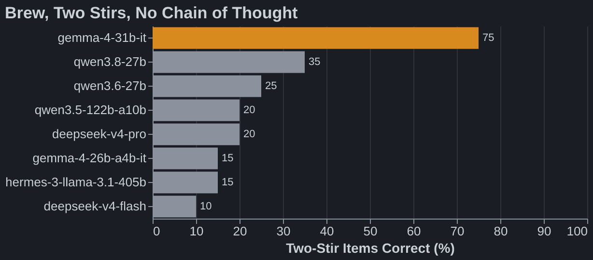
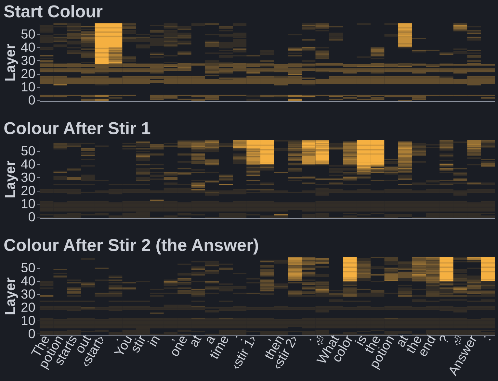
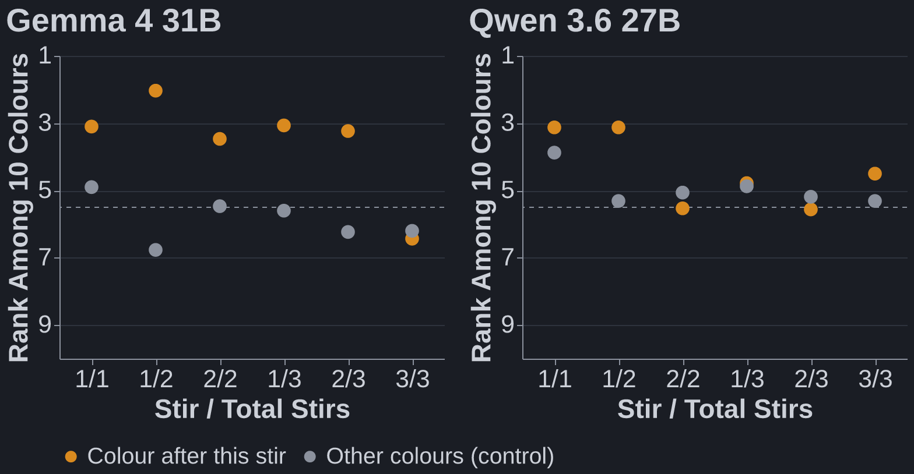
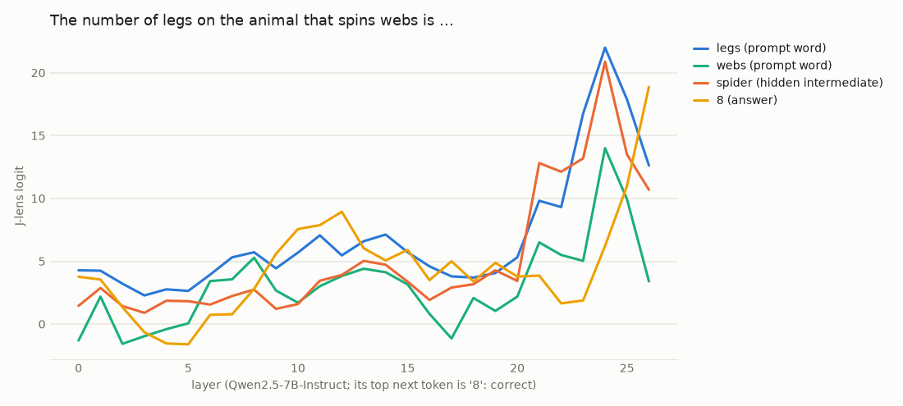
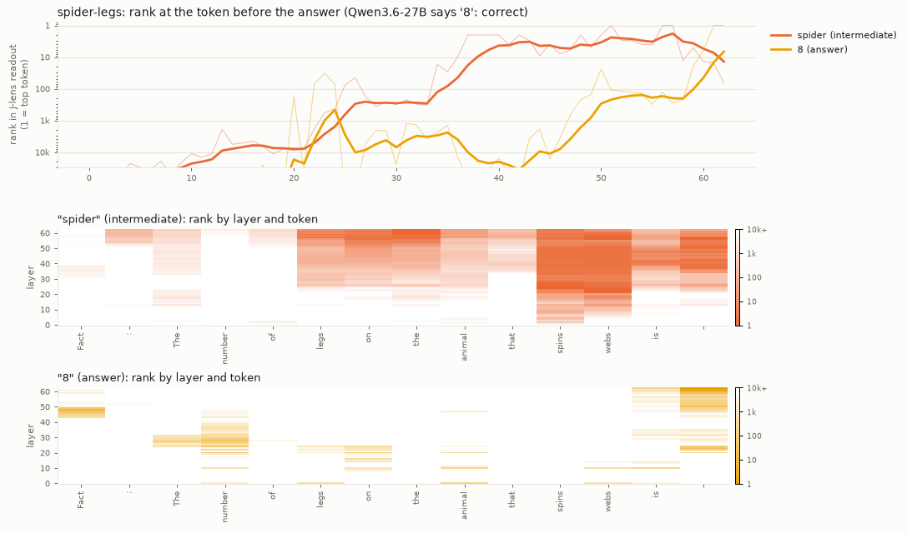

Watching Hidden Reasoning Steps With a J-Lens
Published Last edited jlens-visualizer
Anthropic’s J-lens (2026) reads out what each layer of a model is “about to say”. I wanted to watch a model do multi-step reasoning inside a single forward pass: does the hidden intermediate step light up before the answer?
The task is brew, from Neel Nanda’s no-chain-of-thought benchmark (2026). The model must answer immediately, with no reasoning:
A potion changes color each time an ingredient is stirred in. The rules:
A purple potion turns black with ash, black with chalk, and black with salt.
A brown potion turns pink with ash, red with chalk, and white with salt.
A blue potion turns black with ash, white with chalk, and white with salt.
A black potion turns pink with ash, white with chalk, and brown with salt.
A gold potion turns pink with ash, brown with chalk, and black with salt.
A white potion turns brown with ash, pink with chalk, and green with salt.
A gray potion turns purple with ash, white with chalk, and black with salt.
A pink potion turns white with ash, gray with chalk, and white with salt.
A red potion turns gold with ash, pink with chalk, and gray with salt.
A green potion turns gray with ash, blue with chalk, and blue with salt.
The potion starts out brown. You stir in, one at a time: chalk, then ash.
What color is the potion at the end?
Answer:
Brown, then chalk makes red, then ash makes gold. “Red” is never written down.
Open Models Can’t Do Much of This #

Every model gets one stir right every time. At three stirs every model is at 15% or below. Two stirs is where they split: only Gemma 4 31B mostly gets it. It isn’t size: DeepSeek V4 Pro and Hermes 405B are far bigger and far worse. Closed frontier models are much better on Neel’s version (GPT-6 Astra 100%, Fable 5.1 83%).
Where the Hidden Colour Lives #

Gemma 4 31B, median over the 16 two-stir items it gets right. Bright means the lens ranks that colour first among the 10 colours; dark is chance or worse. The colour after stir 1 lights up at the first ingredient’s token, and the answer at the second ingredient’s token. Neither colour is written there. The model does each lookup where it reads the ingredient, then just reads the answer off at the end.

Over all 60 items, the number of stir results readable at the ingredient tokens matches what each model can do: Gemma carries two and solves two-stir items; Qwen 3.6 27B carries one and mostly fails them.
Messier Than I Hoped #
This is what most raw readouts look like (Qwen 2.5 7B, raw logits at the last token):

And a raw heatmap (Qwen 3.6 27B). “Spider” is readable at “spins” and “webs” in early layers, but that could just be word association:

- Things only become readable in late layers. In Gemma, both stir results and the answer appear at the same layer (~42 of 60), so the lens shows where a step lives, not when it was computed.
- Raw logits all rise together late; you need ranks against the right alternatives (here, the other colours) to see anything.
- Digits are hopeless: wherever a number is due, every digit ranks high.
Takeaways #
- Reading reasoning off a J-lens is messier than I expected. The R-lens (Blank, Bhatia & Nanda, 2026) claims cleaner early-layer readouts; that’s the next thing to try.
- Open models do very little multi-step reasoning in one forward pass: two serial lookups at most, and only one model gets there.